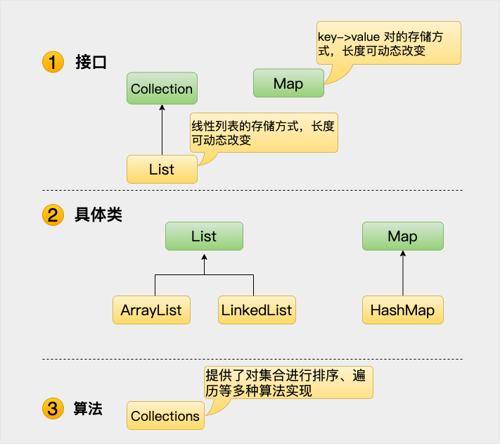

Java コレクションフレームワーク
Java 2 よりはるか以前から、Java にはアドホックなクラスが用意されていました。例えば Dictionary、Vector、Stack、Properties などのクラスは、オブジェクトのグループを格納・操作するために使われていました。
これらのクラスはどれも非常に有用ですが、中核となる統一的なテーマが欠けていました。そのため、Vector クラスの使い方と Properties クラスの使い方は大きく異なっていました。
コレクションフレームワークは、次のいくつかの目標を満たすように設計されています。
-
このフレームワークは高性能でなければなりません。基本コレクション（動的配列、リンクリスト、ツリー、ハッシュテーブル）の実装も効率的でなければなりません。
-
このフレームワークは、異なる種類のコレクションが同様の方法で動作し、高度な相互運用性を持つことを可能にします。
-
コレクションの拡張と適応は簡単でなければなりません。
このために、コレクションフレームワーク全体は一連の標準インターフェースを中心に設計されています。これらのインターフェースの標準実装を直接使用できます。たとえば、次のようなものです：LinkedList, HashSet、およびTreeSetなどです。これ以外にも、これらのインターフェースを通じて独自のコレクションを実装することもできます。

上記のコレクションフレームワークの図からわかるように、Java コレクションフレームワークは主に2種類のコンテナを含みます。1つはコレクション（Collection）で、要素の集まりを格納し、もう1つはマップ（Map）で、キー/値ペアのマッピングを格納します。Collection インターフェースにはさらに List、Set、Queue の3つのサブタイプがあり、その下に抽象クラス、最後に具体的な実装クラスがあります。一般的なものにはArrayList、LinkedList、HashSet、LinkedHashSet、HashMap、LinkedHashMap などがあります。
コレクションフレームワークは、コレクションを表現および操作するための統一アーキテクチャです。すべてのコレクションフレームワークには、次の内容が含まれます：
-
インターフェース：
インターフェースは、コレクションを表す抽象データ型です。例：Collection、List、Set、Map など。複数のインターフェースを定義するのは、コレクションオブジェクトをさまざまな方法で操作するためです。 -
実装（クラス）：コレクションインターフェースの具体的な実装です。本質的には、再利用可能なデータ構造です。例：ArrayList、LinkedList、HashSet、HashMap。
-
アルゴリズム：コレクションインターフェースを実装したオブジェクト内のメソッドが実行する有用な計算です。例：検索や並べ替え。これらのアルゴリズムは多態性（ポリモーフィズム）を実現します。なぜなら、同じメソッドを類似のインターフェース上で異なる実装として持つことができるからです。
コレクションに加えて、このフレームワークはいくつかの Map インターフェースとクラスも定義しています。Map にはキー/値ペアが格納されます。Map はコレクションではありませんが、コレクションの中に完全に統合されています。
コレクションフレームワークの体系を次の図に示します。

Java コレクションフレームワークは、性能が優れ、使いやすいインターフェースとクラスのセットを提供します。Java コレクションフレームワークは java.util パッケージに含まれているため、コレクションフレームワークを使用するときはパッケージのインポートが必要です。
コレクションインターフェース
コレクションフレームワークはいくつかのインターフェースを定義しています。このセクションでは、各インターフェースの概要を説明します：
| 番号 | インターフェースの説明 |
|---|---|
| 1 | Collection インターフェース Collection は最も基本的なコレクションインターフェースです。Collection は Object のグループ、すなわち Collection の要素を表します。Java は Collection を直接継承するクラスを提供せず、Collection を継承したサブインターフェース（List や Set など）のみを提供します。 Collection インターフェースは、一意でなく、順序のないオブジェクトのグループを格納します。 |
| 2 | List インターフェース List インターフェースは順序付けられた Collection です。このインターフェースを使用すると、各要素の挿入位置を正確に制御でき、インデックス（List 内での要素の位置。配列の添字に類似）によって List 内の要素にアクセスできます。最初の要素のインデックスは 0 で、同じ要素を持つことも許可されます。 List インターフェースは、一意でなく、順序付けられた（挿入順の）オブジェクトのグループを格納します。 |
| 3 | Set Set は Collection とまったく同じインターフェースを持ちますが、動作が異なります。Set は重複する要素を保持しません。 Set インターフェースは、一意で、順序のないオブジェクトのグループを格納します。 |
| 4 | SortedSet Set を継承し、ソートされたコレクションを保持します。 |
| 5 | Map Map インターフェースはキーと値のオブジェクトのグループを格納し、キーから値へのマッピングを提供します。 |
| 6 | Map.Entry Map 内の1つの要素（キー/値ペア）を表します。Map の内部インターフェースです。 |
| 7 | SortedMap Map を継承し、キーを昇順に保持します。 |
| 8 | Enumeration これは従来のインターフェースと定義されたメソッドで、これによりオブジェクトコレクション内の要素を列挙（一度に1つずつ取得）できます。この従来のインターフェースはイテレータに置き換えられました。 |
Set と List の違い
-
1. Set インターフェースのインスタンスは、順序のない重複しないデータを格納します。List インターフェースのインスタンスは、順序付けられた重複可能な要素を格納します。
2. Set は検索効率が低く、削除と挿入の効率が高いです。挿入と削除は要素の位置の変更を引き起こしません。<実装クラスには HashSet, TreeSet があります>。
3. List は配列に似ており、動的に成長できます。実際に格納されたデータの長さに応じて List の長さを自動的に増やします。要素の検索効率は高いですが、他の要素の位置の変更を引き起こすため、挿入・削除の効率は低いです。<実装クラスには ArrayList, LinkedList, Vector があります> 。
コレクション実装クラス（コレクションクラス）
Java は Collection インターフェースを実装した標準コレクションクラスのセットを提供します。その一部は具象クラスで、直接使用できます。また別の一部は抽象クラスで、インターフェースの部分実装を提供します。
標準コレクションクラスを以下の表にまとめます：
| 番号 | クラスの説明 |
|---|---|
| 1 | AbstractCollection コレクションインターフェースの大部分を実装します。 |
| 2 | AbstractList AbstractCollection を継承し、List インターフェースの大部分を実装します。 |
| 3 | AbstractSequentialList AbstractList を継承し、ランダムアクセスではなく、データ要素へのチェーンアクセス（連鎖アクセス）を提供します。 |
| 4 | LinkedList このクラスは List インターフェースを実装し、null（空）要素を許可します。主にリンクリストのデータ構造を作成するために使用されます。このクラスには同期メソッドがないため、複数のスレッドが同時に List にアクセスする場合は、アクセス同期を自分で実装する必要があります。解決策は、List を作成するときに同期された List を構築することです。例： List list=Collections.synchronizedList(newLinkedList(...)); LinkedList は検索効率が低いです。 |
| 5 | ArrayList このクラスも List インターフェースを実装しており、可変サイズの配列を実装し、ランダムアクセスと要素の走査においてより良い性能を提供します。このクラスも非同期であり、マルチスレッドの状況では使用しないでください。ArrayList は現在の長さの50%ずつ増加し、挿入・削除の効率は低いです。 |
| 6 | AbstractSet AbstractCollection を継承し、Set インターフェースの大部分を実装します。 |
| 7 | HashSet このクラスは Set インターフェースを実装し、重複要素を許可しません。コレクション内の要素の順序は保証されません。値が null の要素を含むことはできますが、最大1つまでです。 |
| 8 | LinkedHashSet 予測可能な反復順序を持つSetインターフェースのハッシュテーブルとリンクリスト実装。 |
| 9 | TreeSet このクラスは Set インターフェースを実装し、ソートなどの機能を実現できます。 |
| 10 | AbstractMap Map インターフェースの大部分を実装します。 |
| 11 | HashMap
HashMap はハッシュテーブルであり、キーと値のペア（key-value）のマッピングを格納します。 このクラスは Map インターフェースを実装し、キーの HashCode 値に基づいてデータを格納するため、非常に高速なアクセス速度を持ちます。最大で1つのレコードのキーが null になることを許可しますが、スレッド同期はサポートしていません。 |
| 12 | TreeMap
AbstractMap を継承し、ツリーを使用します。 |
| 13 | WeakHashMap
AbstractMap クラスを継承し、弱いキーを使用するハッシュテーブルを使用します。 |
| 14 | LinkedHashMap
HashMap を継承し、要素の自然順序を使用して要素をソートします。 |
| 15 | IdentityHashMap
AbstractMap クラスを継承し、オブジェクトを比較するときに参照の等価性を使用します。 |
以前のチュートリアルでは、java.util パッケージで定義された次のようなクラスについて説明しました。
| 番号 | クラスの説明 |
|---|---|
| 1 | Vector
このクラスは ArrayList と非常によく似ていますが、このクラスは同期されており、マルチスレッドの状況で使用できます。このクラスはデフォルトの増加長を設定でき、デフォルトの拡張方法は元のサイズの2倍です。 |
| 2 | Stack
Stack は Vector のサブクラスであり、標準的な後入れ先出し（LIFO）スタックを実装しています。 |
| 3 | Dictionary
Dictionary クラスは抽象クラスで、キー/値ペアを格納するために使用され、Map クラスと同様の働きをします。 |
| 4 | Hashtable
Hashtable は Dictionary（辞書）クラスのサブクラスであり、java.util パッケージにあります。 |
| 5 | Properties
Properties は Hashtable を継承し、永続的なプロパティセットを表します。プロパティリスト内の各キーと対応する値はすべて文字列です。 |
| 6 | BitSet BitSet クラスは、ビット値を保持する特別な種類の配列を作成します。BitSet 内の配列サイズは必要に応じて増加します。 |
コレクションアルゴリズム
コレクションフレームワークは、コレクションとマップに使用できるいくつかのアルゴリズムを定義しています。これらのアルゴリズムは、コレクションクラスの静的メソッドとして定義されています。
互換性のない型を比較しようとすると、一部のメソッドは ClassCastException 例外をスローすることがあります。変更不可能なコレクションを変更しようとすると、UnsupportedOperationException 例外がスローされます。
コレクションは3つの静的な変数、EMPTY_SET、EMPTY_LIST、EMPTY_MAPを定義しています。これらの変数はすべて変更できません。
| 番号 | アルゴリズムの説明 |
|---|---|
| 1 |
コレクションのアルゴリズム（Collection Algorithms） ここにすべてのアルゴリズム実装のリストがあります。 |
イテレータの使い方
通常、コレクション内の要素を走査したいと思うでしょう。例えば、コレクションの各要素を表示する場合です。
一般に、配列の走査にはforループまたは拡張forを使用します。これらの2つの方法はコレクションフレームワークでも使用できますが、もう1つの方法として、イテレータを使用してコレクションフレームワークを走査する方法もあります。それはオブジェクトであり、実装しているのはIteratorインターフェースまたは ListIterator インターフェースです。
イテレータを使用すると、ループによってコレクションの要素を取得または削除できます。ListIterator は Iterator を継承しており、リストの双方向走査と要素の変更を可能にします。
| 番号 | イテレータメソッドの説明 |
|---|---|
| 1 |
Java Iterator の使用 ここでは、Iterator および ListIterator インターフェースが提供するすべてのメソッドをインスタンスで列挙します。 |
ArrayList の走査
例
解説：
3つの方法はすべて ArrayList コレクションを走査するためのものです。3番目の方法はイテレータを使用する方法で、走査中にコレクションの長さを超えることを心配する必要がありません。
Map の走査
例
コンパレータの使い方
TreeSet と TreeMap は、ソート順に要素を格納します。しかし、どのようなソート順にするかは、コンパレータによって正確に定義されます。
このインターフェースを使用すると、コレクションをさまざまな方法でソートできます。
| 番号 | コンパレータメソッドの説明 |
|---|---|
| 1 | Java Comparator の使用 ここでは、Comparator インターフェースが提供するすべてのメソッドをインスタンスで列挙します。 |
まとめ
Java コレクションフレームワークは、プログラマーに、それらを操作するための事前にパッケージ化されたデータ構造とアルゴリズムを提供します。
コレクションは、他のオブジェクトへの参照を保持できるオブジェクトです。コレクションインターフェースは、各タイプのコレクションに対して実行できる操作を宣言します。
コレクションフレームワークのクラスとインターフェースはすべて java.util パッケージにあります。
オブジェクトをコレクションクラスに追加すると、自動的に Object 型に変換されるため、取り出すときに強制型変換を行う必要があります。
その他の拡張
共有
Com***able@jihe.com
ArrayList と LinkedList の違い
ArrayList は List インターフェースの実装の1つで、配列を使用して実装されています。
LinkedList は List インターフェースの実装の1つで、リンクリストを使用して実装されています。
ArrayList は要素の走査と検索が比較的速いです。LinkedList は要素の走査と検索が比較的遅いです。
ArrayList は要素の追加、削除が比較的遅いです。LinkedList は要素の追加、削除が比較的速いです。
共有
Com***able@jihe.com
共有
Com***able@jihe.com
オブジェクトをコレクションクラスに追加すると、自動的に Object 型に変換されるため、取り出すときに強制型変換を行う必要があります。
オブジェクトはジェネリクスを使用する前は自動的に Object 型に変換されますが、ジェネリクスを使用した後は強制型変換が不要になります。
共有
Com***able@jihe.com
影法师
ren***e1@sina.com
関連についてmap.entrySet() 和 keySet():
1、hashMap() を走査するとき、entrySet() メソッドは key と value をすべて取り出すため、パフォーマンスのオーバーヘッドは予測可能です。一方、keySet() メソッドで走査するときは、取り出した key の値から対応する value の値を照会します。そのため、key の値が単純な構造（1,2,3... など）であれば、パフォーマンスの消費は entrySet() メソッドより低くなりますが、key の値の複雑さが増すにつれて entrySet() の利点が明らかになります。
2、総合的に比較すると、key のみを走査する場合は keySet() を使用し、value のみを走査する場合は values() メソッドを使用し、key-value を走査する場合は entrySet() を使用するのが合理的な選択です。
3、TreeMap を走査する場合、HashMap とは異なり、TreeMap の key-value を走査するときは必ず entrySet() を使用してください。これは他の2つよりもはるかに高いパフォーマンスを発揮します。同様に、key のみを走査する場合は keySet() を、value のみを走査する場合は values() メソッドを使用することは TreeMap にも同様に適用されます。
影法师
ren***e1@sina.com
°
858***854@qq.com
コレクションフレームワークは、次のいくつかの目標を満たすように設計されています。
すべてのコレクションフレームワークには、次の内容が含まれます：
- インターフェース：コレクションを表す抽象データ型です。例：Collection、List、Set、Map など。複数のインターフェースを定義するのは、コレクションオブジェクトをさまざまな方法で操作するためです。
- 実装（クラス）：コレクションインターフェースの具体的な実装です。本質的には、再利用可能なデータ構造であり、例：ArrayList、LinkedList、HashSet、HashMap。
- アルゴリズム：コレクションインターフェースを実装するオブジェクト内のメソッドが実行する有用な計算です。例：検索やソート。これらのアルゴリズムは多態的と呼ばれます。なぜなら、同じメソッドが類似のインターフェース上で異なる実装を持つことができるからです。
Set と List の違い°
858***854@qq.com
zhangchaohong137
251***396@qq.com
コレクションにはさらに、フェイルファスト（fail-fast）とフェイルセーフ（fail-safe）のメカニズムがあります。深く学びたい場合は、こちらを参照してください（Java のフェイルファストとフェイルセーフ）。解決方法をここにまとめておきます：
1、シングルスレッドでの走査中に remove 操作を行う場合は、コレクションクラスの remove メソッドではなく、イテレータの remove メソッドを呼び出すことができます。
2、Java並行パッケージ(java.util.concurrent)内のクラスを使用して、ArrayListとHashMapの代わりにします。例えば、CopyOnWriterArrayListを使用してArrayListを置き換えます。CopyOnWriterArrayListは使用上ArrayListとほぼ同じです。CopyOnWriterは書き込み時コピーコンテナ(COW)であり、読み書き時にスレッドセーフです。このコンテナはaddやremoveなどの操作を行う際、元の配列上で変更するのではなく、元の配列をコピーし、新しい配列上で変更します。完了後に初めて、古い配列を指していた参照を新しい配列に向けます。そのため、CopyOnWriterArrayListでは反復処理中にfail-fast現象は発生しません。ただし、CopyOnWriteコンテナはデータの最終一貫性のみを保証でき、リアルタイム一貫性は保証できません。HashMapについては、ConcurrentHashMapを使用できます。ConcurrentHashMapはロック機構を採用しており、スレッドセーフです。反復処理に関しては、ConcurrentHashMapは異なる反復方式を使用しています。この反復方式では、イテレータが作成された後にコレクションが変更されても、ConcurrentModificationExceptionはスローされません。代わりに、変更時に新しいデータを作成して元のデータに影響を与えず、イテレータの完了後に先頭ポインタを新しいデータに置き換えます。これにより、イテレータスレッドは元の古いデータを使用でき、書き込みスレッドも並行して変更を完了できます。つまり、反復処理ではfail-fastは発生しませんが、取得したデータが最新であることは保証されません。
zhangchaohong137
251***396@qq.com
Carpen
pan***peng2016@126.com
ここでListとSetの違いを訂正します。Setの検索効率はListよりも高いです。
Setの検索効率Listと比較して高く、その理由は、Setがハッシュテーブルやツリーなどのデータ構造に基づいて要素を格納しているためです。要素を検索する際、Setはまず要素のハッシュ値を計算するか、コンパレータを使用して比較し、その後ハッシュ値や比較結果に基づいてデータ構造内で要素を検索します。この方式の時間計算量はO(1)またはO(logN)です。、したがってSetの検索効率は比較的高いです。
一方、Listの検索効率はSetと比較して低いです。その理由は、Listが配列やリンクリストなどのデータ構造に基づいて要素を格納しているためです。要素を検索する際、Listは対象の要素を見つけるか、すべての要素を走査し終えるまで、要素を順に走査する必要があります。この方式の時間計算量はO(N)であり、したがってListの検索効率は比較的低いです。
混同しやすい点は、要素へのランダムアクセスと要素の検索です。この2つは同じものではありません。
要素へのランダムアクセスインデックスやオフセットを使用してコレクション内の要素にアクセスできることを指します。例えば、ArrayListのget(int index)メソッドを使用します。要素へのランダムアクセスの効率は通常非常に高く、内部データ構造内の要素に直接アクセスできるため、時間計算量はO(1)です。
要素の検索コレクション内で特定の要素を検索するプロセスを指します。例えば、Setのcontains(Object o)メソッドを使用します。要素の検索効率はコレクションの実装方法と要素数に依存し、通常はコレクション内のすべての要素を走査して目的の要素を検索する必要があるため、時間計算量はO(N)です。
もう一点補足します。大規模データに対して、Setのメモリ使用量は大きくなりますが、ArrayListの性能は優れています。
Carpen
pan***peng2016@126.com